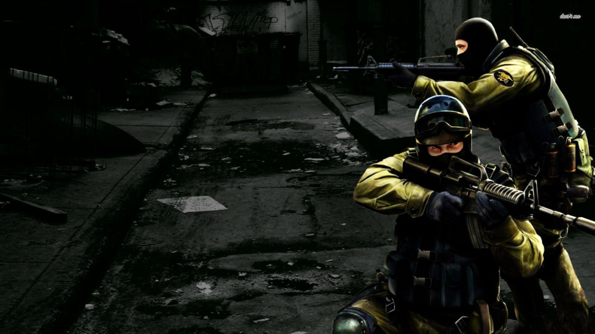

Apesar de ser considerado um novo jogo, counter strike global offensive tem muitas coisas
em comum com o seu antecessor de mais sucesso entre todos, o counter strike 1.6, já conhecido
por muitos e hoje declarado "morto" era um dos jogos mais procurados. O "novo jogo" herda maior
parte de suas características desse PAI ja esquecido por muitos, o que torna a sensação de nostalgia
muito grande para quem é grande fã do jogo.